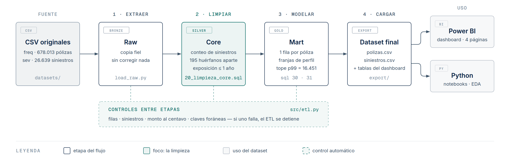
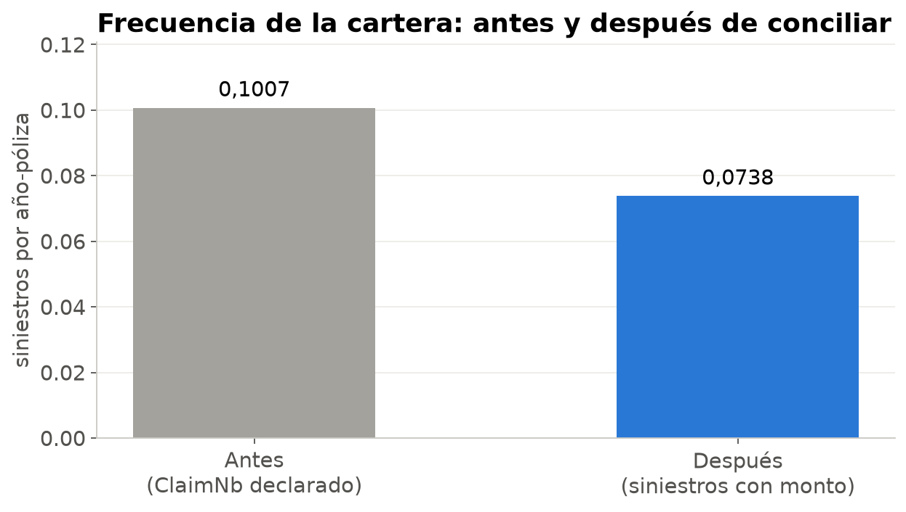
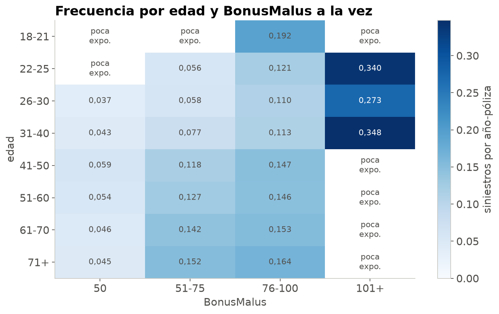
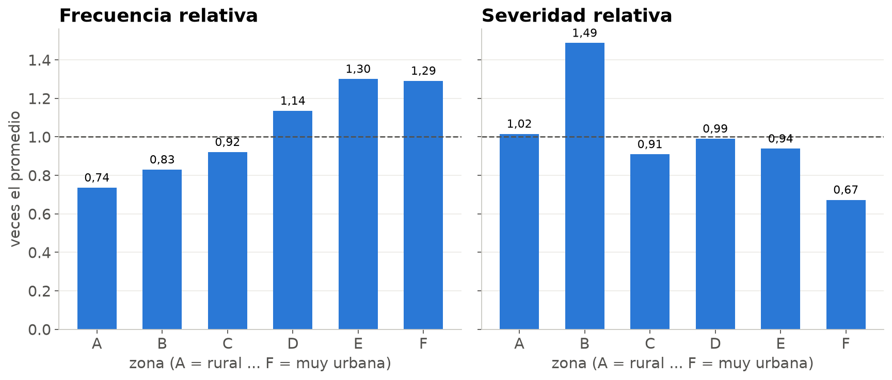
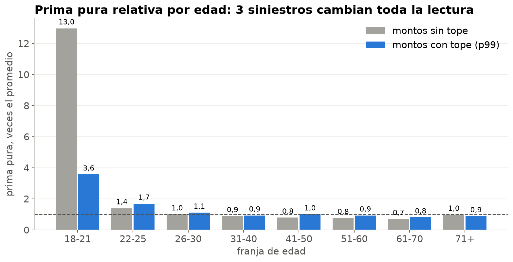

Equipo de pricing · para la Dirección Técnica
Costo esperado de siniestros por perfil de conductor y vehículo
Seguro de autos RC · Francia (freMTPL2)
Bruno · Juan Pablo · Uriel · Nicolás — TP Integrador · Análisis de Datos
🎤 Bruno · 0:15
Buenas, somos el grupo 4: Bruno, Juan Pablo, Uriel y Nicolás. Trabajamos sobre seguros de autos, desde el rol del equipo de pricing de una aseguradora, que le presenta a la dirección técnica.
La pregunta es simple: ¿quién nos cuesta más?
1 · Presentación del caso
Encuentra un precio mejor y se va.
Se queda, porque nadie le cobra tan barato.
La cartera se llena de los perfiles que más cuestan.
Saber cuánto cuesta cada perfil es la base de cualquier tarifa.
🎤 Bruno · 0:40
Una aseguradora cobra antes de saber cuánto le va a costar el cliente.
Imaginen dos clientes que pagan 300 euros por año. Uno nos cuesta 100 y el otro 500. El primero paga de más, encuentra algo más barato y se va. El segundo paga de menos y se queda.
Así la cartera se llena de clientes caros: eso es selección adversa. Por eso, saber cuánto cuesta cada perfil es la base de cualquier tarifa.
(Los 300 / 100 / 500 son un ejemplo inventado, no salen del dataset.)
2 · Pregunta e hipótesis
H1
→ el BonusMalus separa el riesgo más que ser joven
H2
→ más frecuencia, no necesariamente más severidad
H3
→ dominan el costo más que el perfil
prima pura = monto / años de exposición = frecuencia × severidad · relatividad = segmento / cartera (1,30 = cuesta 30 % más)
🎤 Bruno · 1:05
Nuestra pregunta: ¿qué perfiles tienen mayor prima pura, y cuánto se apartan del promedio? La prima pura es lo que esperamos que nos cueste un cliente por año: el costo, no el precio. Y la relatividad lo compara con el promedio: 1,30 es un 30 % más caro.
Usamos una cartera real de Francia, de 678 mil pólizas, y planteamos tres hipótesis.
Primera: el historial pesa más que la edad. Cada conductor tiene un puntaje, el BonusMalus, que arranca en 100, baja cada año sin choques y sube con cada choque. Todos pensamos que el riesgoso es el joven, pero el joven también arranca con el puntaje alto. ¿Es la edad o el historial?
Segunda: en la ciudad se choca más seguido, pero no más caro.
Tercera: unos pocos siniestros muy grandes pesan más que el perfil.
Antes de responderlas hay que ver si los datos son confiables. Eso lo cuenta Juan Pablo.
Por si preguntan: exposición = tiempo que estuvo vigente la póliza, por eso dividimos por años y no promediamos por póliza. El BonusMalus baja hasta 50 y sube solo con siniestros con culpa. H1 no es "BonusMalus alto choca más" (eso es esperable): es si pesa más que la edad.
3 · Descripción del dataset · freMTPL2
Tabla 1 · pólizas (freq)
1 fila = 1 póliza · exposición, cantidad de siniestros, edad, BonusMalus, datos del auto, zona, densidad y región
Tabla 2 · siniestros (sev)
1 fila = 1 siniestro · póliza y monto. Se une por IDpol: una póliza tiene 0, 1 o varios siniestros
Fuente: CASdatasets (R), vía Kaggle · solo responsabilidad civil · sin fechas (anterior a 2016) · marca anonimizada
🎤 Juan Pablo · 1:15
Por qué lo elegimos: dos tablas que hay que conciliar, variables numéricas y categóricas, problemas de calidad reales y un dato externo para enriquecer (regiones 2016).
Granularidad: la frecuencia se calcula por póliza, la severidad por siniestro.
4 · Flujo técnico · ETL

Todo el flujo se reconstruye con python src/etl.py en unos 10 segundos.
🎤 Juan Pablo · 1:45 (con código)
Mostrar en vivo: notebooks/00_etl_demo.ipynb (una celda por etapa, con su resultado). Si preguntan cómo se corre todo junto: python src/etl.py.
Por qué tres capas: raw queda intacto, así siempre podemos mostrar el antes contra el después.
Python orquesta; las transformaciones están en SQL (sql/20_limpieza_core.sql, sql/30_mart.sql). Paso a Uriel.
5 · Transformaciones y controles de calidad

🎤 Uriel · 1:45 (con código)
Cada problema tuvo una de tres decisiones: corregir (ID "1.00E+05"), marcar (el lote IDpol ≤ 24.500) o dejar (montos extremos, que son reales).
Mostrar en vivo: la consulta de conciliación en sql/11_calidad.sql o el antes/después en sql/21_antes_despues.sql.
Si preguntan por qué no borramos el lote: borrarlo también sesga; lo marcamos y sin él la frecuencia da igual (0,0739).
6 · Análisis exploratorio · el conductor (H1)

🎤 Uriel · 1:15
Adelantarse a la objeción: "Que el BonusMalus anticipe siniestros es esperable, porque resume el historial. Lo interesante es cuánto pesa y que se mezcla con la edad: un joven tiene BonusMalus alto por ser nuevo, no por haber chocado."
Concepto clave: variables confundidas. Mirar una variable por vez exagera el efecto de la edad.
Celdas en blanco = menos de 500 años de exposición: no las interpretamos.
Regla del BonusMalus (dato externo): arranca en 100, baja 5 % por año sin siniestros hasta 50, sube 25 % por siniestro (docs/09).
6 · Análisis exploratorio · zona y vehículo (H2)

🎤 Uriel · 1:00 (con código)
Cómo trabajamos el EDA: cada variable con su peso en la cartera al lado, y cruces para separar efectos reales de confusiones.
Mostrar en vivo: notebooks/03_eda.ipynb (descriptivas, distribuciones, correlaciones, outliers).
Paso a Nicolás, que lo muestra en el dashboard.
7 · Dashboard · Power BI · en vivo
Página 1
Indicadores clave, zona y Pareto del costo
Página 2
Relatividades por edad, BonusMalus y antigüedad
Página 3
Costo por región, con su peso en la cartera
Página 4
Antes y después de la limpieza
Filtros por zona, combustible y antigüedad del vehículo
🎤 Nicolás · 2:30 (demo)
Cambiar a Power BI. En Perfiles, filtrar Combustible = Diesel: el orden por edad y BonusMalus se mantiene.
Power BI lee el dataset final del ETL (export/polizas.csv): no limpia nada, eso pasó antes.
Las medidas suman y dividen (siniestros ÷ exposición): nunca se promedia la cantidad de siniestros.
Plan B: capturas de cada página.
8 · Insights · pocos siniestros grandes (H3)

🎤 Nicolás · 0:50
Mensaje: un número que depende de 3 casos no se lleva a una tarifa.
El tope es configurable (python src/etl.py 0.995). El p99 saca el 30,7 % del monto: en una tarifa real ese excedente se reparte en toda la cartera.
8 · Conclusiones
H1 · Historial vs. edad
Jóvenes ≈ 3,6×, y buena parte de eso es BonusMalus.
H2 · Zona
Densidad: de 0,70× a 1,32×.
H3 · Siniestros grandes
3 siniestros mueven una franja entera.
Y antes que nada: los datos se corrigieron; sin eso, la frecuencia estaba 36 % arriba.
🎤 Nicolás · 0:50
Volver a la pregunta de la slide 2: los perfiles más caros son BonusMalus con recargo y conductores de 18–21; la zona urbana suma por frecuencia.
Valores con tope p99 (prima pura relativa). Paso a Bruno.
9 · Limitaciones y mejoras futuras
🎤 Bruno · 1:05
Para cerrar, queremos decir nosotros hasta dónde llega el análisis.
Primero: no es una tarifa. Medimos cuánto cuesta cada perfil, pero no sabemos cuánto se le cobró ni el margen.
Segundo: mostramos asociaciones, no causas, y edad y BonusMalus vienen mezclados.
Tercero: los perfiles más caros son los más chicos. Los de 18 a 21 son poco más del 1 % de la cartera, y el tope que elegimos cambia el resultado.
Y los datos: una sola aseguradora, sin fechas, y casi un tercio de los montos son importes fijos entre aseguradoras, no el costo real.
¿Qué haríamos después? Un modelo que mire todas las variables juntas, probar los números en pólizas nuevas y sumar primas y kilómetros recorridos. Así pasaríamos de saber cuánto cuesta cada perfil a saber cuánto cobrarle. Gracias, ¿preguntas?
Por si preguntan: el modelo es un GLM, que separa edad y BonusMalus. Importe fijo = forfait de la convención IRSA; 1.204 € aparece en el 18 % de los siniestros y 1.128,12 € en el 12 %. Solo cubre responsabilidad civil.
Gracias
Evidencia técnica: sql/ · src/etl.py · notebooks/01–03 · export/ · powerbi/ · docs/
🎤 Todos
Cada uno responde las preguntas de su parte. Probables: ¿por qué no promediaron siniestros? (exposición) · ¿por qué el tope? (3 siniestros) · ¿por qué no borraron el lote? (sesga, y no cambia nada) · ¿la edad causa más choques? (asociación, no causa).